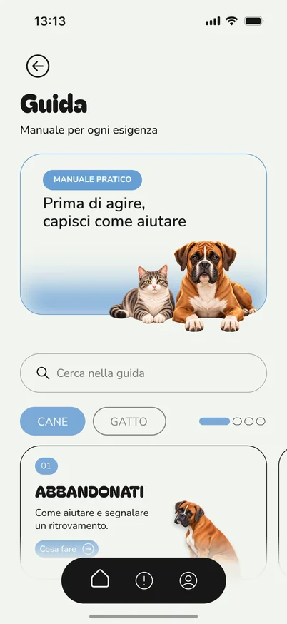
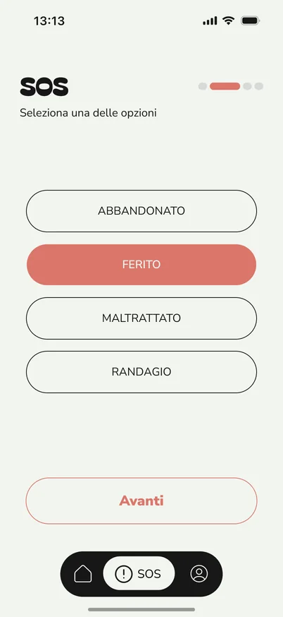

Progetto
Tutto il processo, visibile insieme.
Dal dubbio al primo gesto, senza perdere un passaggio: guida, segnalazione, aggiornamenti e ciò che resta nell’app.
-
 01
01Il dubbio
Hai trovato un cane o un gatto in difficoltà e non sai da dove partire.
-

02Esplora
Apri la guida e i contatti utili prima di agire.
-

03Segnala
Descrivi l’animale, la situazione e il luogo. Quattro punti di partenza: abbandonato, ferito, maltrattato, randagio.
-
 04
04Segui
Ritrova la segnalazione e gli aggiornamenti su età, salute e stato.
-
 05
05Resta nell’app
Mappa, SOS, Helpaw e numeri utili restano a portata di mano, anche dopo il primo gesto.